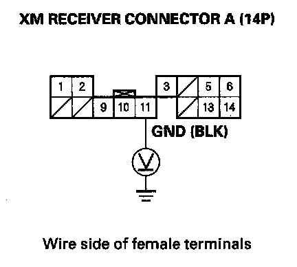

Error Code: XM NO SIGNAL or XM ANTENNA Is Displayed
Error code: XM NO SIGNAL or XM ANTENNA is displayedNOTE:
- Check XM radio reception in an open area. Poor reception/interference can be caused by tall buildings, mountains, or high-voltage power lines.
- If you can only tune to channel 000, 001, 174 and 247, make sure the audio unit is set to channel mode (see owner's manual), if it is set to channel mode, call XM radio customer support and check the account activation status.
- If you replace the XM receiver, the Acuralink must be reactivated by Acura Client Services.
1. Park vehicle outside with a clear view of the southern horizon.
Does the XM radio receive a signal?
YES - Reception interference operation is normal.
NO
- With AcuraLink: Go to step 2.
- Without AcuraLink: Go to step 8.
2. Check XM antenna 2P connector and XM receiver (AcuraLink control unit) connector C (2P).
Are the connectors connected?
YES - Go to step 3.
NO - Reconnect XM antenna 2P connector and XM receiver (AcuraLink control unit) connector C (2P), recheck XM radio operation. If the signal is restored, operation is normal. If signal is not restored go to step 3.
3. Turn the ignition switch to OFF (0).
4. Measure the voltage between XM receiver (AcuraLink control unit) connector A (20P) No. 1 terminal and body ground.
Is there battery voltage?
YES - Go to step 5.
NO - Repair open in the wire between No. 5 (10 A) fuse in the under-dash fuse/relay box and XM receiver (AcuraLink control unit) connector A (20P) No. 1 terminal.
5. Reconnect the XM receiver (AcuraLink control unit) connector A (20P).
6. Check the voltage between XM receiver (AcuraLink control unit) connector A (20P) No. 11 terminal and body ground.
Is there less than 0.1 V?
YES - Go to step 7.
NO - Repair open in the wire between XM receiver (AcuraLink control unit) connector A (20P) No. 11 terminal and body ground (G606).
7. Substitute known-good XM antenna.
Does the XM radio receiver a signal?
YES - Replace XM antenna.
NO - Substitute a known-good XM antenna lead. If the XM receiver (AcuraLink control unit) receives a signal, replace the original XM antenna lead. If the XM receiver (AcuraLink control unit) does not receive a signal, substitute a known-good XM receiver (AcuraLink control unit).
8. Check XM antenna 2P connector and XM receiver connector B (2P).
Are the connectors connected?
YES - Go to step 9.
NO - Reconnect XM antenna 2P connector and XM receiver connector B (2P), recheck XM radio operation. If the signal restored, operation is normal. If signal not restored go to step 3.
9. Turn the ignition switch to OFF (0).
10. Measure the voltage between XM receiver connector A (14P) No. 1 terminal and body ground.
Is there battery voltage?
YES - Go to step 11.
NO - Repair open in the wire between No. 5 (10 A) fuse in the under-dash fuse/relay box and XM receiver connector A (14P) No. 1 terminal.
11. Reconnect the XM receiver connector A (14P).

12. Measure the voltage between XM receiver connector A (14P) No. 11 terminal and body ground.
Is there less than 0.1 V?
YES - Go to step 13.
NO - Repair open in the wire between XM receiver connector A (14P) No. 11 terminal and body ground (G606).
13. Substitute known-good XM antenna.
Does the XM radio receiver a signal?
YES - Replace XM antenna.
NO - Substitute a known-good XM antenna lead. If the XM receiver receives a signal, replace the original XM antenna lead. If the XM receiver does not receive a signal, substitute a known-good XM receiver unit.